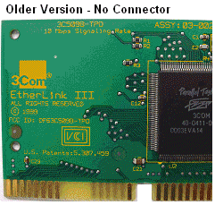
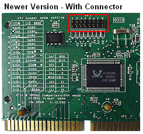
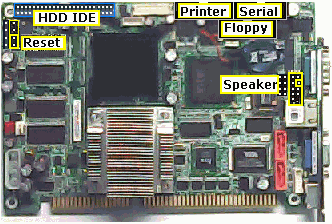
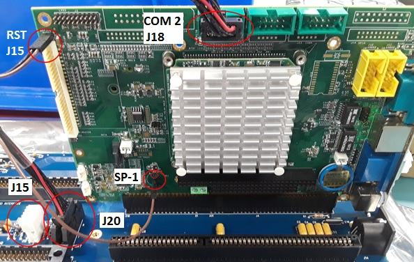

This procedure describes how to replace the Access 2 analytical unit (AU) hard drive and install the software that operates the AU.
Determine instrument hardware.
Check for type of NIC PCB

Or

Note:
Identify the newer version NIC by the presence of a jumper connector at the top of the card.
New AU hard drives are shipped configured to work with the newer version NIC. The older version NIC does not communicate with the PC until the older NIC driver is loaded into the new AU hard drive.
If the NIC PCB is the newer version with a connector, do not replace PCB. Proceed to the step: Send the software files.
If you have the older version of the NIC PCB, you will need to replace it with the newer version of the NIC PCB.
CPU PCBs
IOWA CPU Board and hard drive

VDX2 CPU Board and hard drive
Note: Compact flash hard drive is inserted into a socket on the back side of the CPU board.

Perform this procedure when the instrument hard drive requires replacement.
Note: Other hardware failures can cause the AU hard drive not to work correctly and should be investigated before replacing the hard drive. Refer to the
Troubleshooting Network Errors Access 2 procedure.
Caution:
Using the Access2 software CD to load software into a new or newly formatted instrument hard drive, erases the I/O PCB alignment values and creates an incorrect IP address for the AU in the database.
Do not skip any steps in this procedure. Skipping steps, such as checking the CMOS settings on older hard drives, can cause communication issues and unusual symptoms later.
Replace the AU hard drive.
Exit the user interface from the PC by pressing
[ALT] + [F4], and then entering the password
Access2Support (case-sensitive).
Power off the instrument.
Disconnect the keyboard and video cables from the back of the PC. Connect them directly to the instrument CPU PCB or to the AT keyboard port with an adaptor.
Replace the instrument hard drive.
IDE Flash Hard Drive, only compatible with IOWA CPU PCB and below.
Compact Flash Hard Drive, only compatible with VDX2 CPU PCB.
Note:
The Apacer 8 GB Flash drive connects directly to the CPU PCB (no ribbon cable). The IDE and power connectors are keyed for polarity. Route the Flash drive power cable to the old HDD power connector. The power cable routes over the other PCBs and through the slot in the front of the card cage above the hard drive.
The SMART Module 1 GB Flash drive plugs into the same ribbon cable as the previous hard drive, with the ribbon cable connector toward the bottom and the ribbon cable routed behind the HDD mounting plate. The IDE adapter is mounted with the power connector to the left and the four open pins to the right.
The red stripe on the HDD ribbon cable is on the right side when the hard drive is mounted to the card cage.
The HDD ribbon cable connects to the CPU PCB with the red stripe to the left, except on the IOWA CPU (identified by a blue IDE connector) where the stripe is to the right on the CPU PCB end.
The CF card is a 8GB Compact Flash card that is inserted into a eject type socket on the back side of the CPU board.
The CF card is powered by VDX2 CPU board. No power cable is required.
Configure the CMOS on the CPU PCB.
Power on the AU, and during the boot-up process press the
[Delete] key to access the CMOS setup.
Note: If access to the CMOS setup is not allowed when the keyboard is connected directly to the PS/2 keyboard connector on the CPU PCB, then use the PS/2 to AT adapter included in the Customer Care Kit Toolbox to connect the keyboard to the AT connector on the instrument.
From the Standard CMOS Setup screen, enter the hard drive parameters (Cyl, HD, WPC, LZ, Sect) as listed on the hard drive parameters table or the label attached to the front of the hard drive.
Note:
The IOWA CPU PCB and VDX2 CPU PCB are set to Auto-Detect the hard drive parameters and do not require CMOS setup.
Press the
Num Lock key to activate the keyboard keypad numbers.
The Mode must be set to Normal to edit the other parameters.
The PRE or WPC entry can be 65535 or zero.
Table 50: CMOS Settings for the Hard Drive Parameters
Hard Disk TYPE 47 / User
Cyl
Head
PRE
LZ
Sect
Conner
762
8
0
762
39
Quantum 170 MB
1011
15
0
1011
22
Quantum 2.1 GB
1023
16
0
1023
63
Quantum or Maxtor 7.5 GB
Use
Auto
Detect
Quantum or Maxtor 10.2 GB (and larger)
14552
16
0
14552
63
Seagate 40 GB or 80 GB
16384
16
0 or 65535
65530
63
Seagate or Samsung 120 GB
65531
16
0 or 65535
65530
63
Seagate 30 GB
58140
16
0 or 65535
58139
63
Smart Mod 1 GB Flash
2034
16
0 or 65535
2033
63
Apacer 8 GB Flash (mounts to CPU PCB)
15504
16
0 or 65535
15503
63
Apacer 8 GB Compact Flash card (mounts to The back of CPU PCB)
15,880
16
0 or 65535
15,881
63
Press
[Esc] to exit and
[F10] to exit CMOS setup and
[Y] to save changes.
Note: The AU continues to boot-up after exiting CMOS setup, and then finishes with an OS 9000 IPL prompt.
Send the software files.
Caution: Using the Access 2 software CD to load software into a new or newly formatted instrument hard drive, erases the I/O PCB alignments and creates an incorrect IP address for the AU in the database.
Confirm communications from the PC to the AU.
Connect the keyboard and monitor to the PC.
At the Windows desktop,
For Windows XP system, select
Start > Run. On the Run text line, type
cmd and then press
[Enter].
For Windows 8 system, press
Windows key and select
Command Prompt application icon.
For Windows 10 system, press
Windows key, type "command" and select
Command Prompt application icon.
In the cmd window at the
C:> prompt, type
ping 192.168.2.2 or
192.168.2.4 and then press
[Enter].
If the AU does not reply as expected, confirm that the:
Ping command and IP address are typed correctly.
AU power is on. Reboot the AU.
Note: The default address for a new AU HDD is 192.168.2.2. A used HDD might have a different IP address, such as 192.168.2.4.
Start an FTP session from the PC to the AU.
In the cmd window at the
C:> prompt, type
ftp then press
[Enter].
At the
ftp> prompt, type
open 192.168.2.2 (the address identified by the ping), and then press
[Enter].
At the
ftp> prompt, type
super, press
[Enter], type
user, and then press
[Enter].
Note:
The word
user is invisible, when typed.
A
User Super Logged In message is displayed after logging in to the AU.
Send the AU operating and start-up files from the PC to the AU hard drive.
When the software is loaded, the start-up file is saved on the PC and the file contains the AU IP address.
Type
cd /hc1fmt, and then press
[Enter].
At the
ftp> prompt, type
bin, and then press
[Enter] to change the transfer file type to binary.
Note: The system responds with
type set to i.
At the
ftp> prompt, type
mput c:\nexstep\instrument\mw86sm.tar, and then press
[Enter]
Note:
If there is a
? prompt, press
[Enter] to continue the file transfer.
The .tar file is large and can take 15 seconds to transfer. The transfer ends with the
ftp> prompt.
If an error occurs, the path to the file may have been typed incorrectly.
If the file does not seem to be on the PC, use Windows Explorer to confirm that the file is missing. If the file is not found on the PC, then load the software using the Access 2 software CD. The mw86sm.tar file will not be on the PC until after the Access 2 software is loaded.
At the
ftp> prompt, type
mput c:\nexstep\instrument\nexstepdebugos9.tar, and then press
[Enter].
Note:
If there is a
? prompt, press
[Enter] to continue the file transfer.
The .tar file is large and can take 15 seconds to transfer. The transfer ends with the
ftp> prompt.
If an error occurs, the path to the file may have been typed incorrectly.
If the file does not seem to be on the PC, use Windows Explorer to confirm that the file is missing. If the file is not found on the PC, then load the software using the Access 2 software CD. The nexstepdebugos9.tar file will not be on the PC until after the Access 2 software is loaded.
Type
cd /hc1fmt/sys, and then press
[Enter].
Type
ascii, and then press
[Enter] to set the transfer file type to ascii.
Note: The system responds with
type set to a.
Type
mput c:\nexstep\pc\drw\os9000\startup, and then press
[Enter].
Note:
If there is a
? prompt, press
[Enter] to continue the file transfer.
If the file is not present, then also try
c:\nexstep\pc\backup\drw\os9000\startup.
The start-up file contains the AU IP address stored in the PC and the file size is about 4 kb.
The new IP address does not take effect until after the AU reboots.
A new or MFG Cleaned-Up PC does not have a start-up file.
Close the cmd window.
Telnet to the AU and extract the AU operating files on the AU hard drive.
At the Windows desktop,
For Windows XP system, select
Start > Run.
For Windows 8 system, press
Windows key and select
Command Prompt icon or type
run and open the run application.
For Windows 10 system, simultaneously press the
Windows key and the
'R' Key to open the run application.
In the cmd window or run text box, type
telnet 192.168.2.2, and then press
[Enter] to open a Telnet window.
Note: 192.168.2.2 is the default address for a new AU HDD before loading the startup file and rebooting the AU. A used HDD might have a different IP address, such as 192.168.2.4.
At the
login prompt, type
super user, and then press
[Enter].
Type these four commands:
chd /hc1fmt, and press
[Enter].
load -d tar diskcache, and press
[Enter].
diskcache -e /hc1fmt=1024k, and press
[Enter].
tmode nopause, and press
[Enter].
At the prompt, type
tar xvpf mw86sm.tar, and press
[Enter].
Note: Files are created ending with a prompt.
At the prompt, type
tar xvpf nexstepdebugos9.tar, and press
[Enter].
Note: Files are created ending with a prompt.
Close the telnet window.
Restore the nvsetup file alignments values.
Reboot the AU.
Note:
Do not reboot the PC now. If the PC is rebooted, the UI could launch and request entry of the instrument serial number. Do not enter the serial number, if prompted. Entering a serial number causes the erasure of the instrument I/O PCB alignments. Press the
Ctrl + Alt + Delete keys, and select
Task Manager. To cancel the serial number entry, select
End Task for all UI applications and the NexStepUIUD.exe process.
The AU reboot causes the instrument to use the new startup file with the IP address 192.168.2.4.
Open a telnet session to the AU side.
In the Windows desktop,
For Windows XP, select
Start > Run.
For Windows 8 system, press
Windows key and select
Command Prompt icon or type
run and open the run application.
For Windows 10 system, simultaneously press the
Windows key and the
'R' key to open the run application.
In the cmd window or run text box, type
telnet 192.168.2.4, and then press
Enter to open a telnet window.
Note: The IP address corresponds to the IP address identified in the start-up file: 192.168.2.4 server, or 2.6 client. The default address for a new AU HDD is 192.168.2.2. After loading the startup file and rebooting the AU, the IP address increments.
If the telnet connection fails, then:
Reboot the AU.
Open a telnet session to the AU side.
In the Windows desktop,
For Windows XP, select
Start > Run.
For Windows 8 system, press
Windows key and select
Command Prompt icon or type
run and open the run application.
For Windows 10 system, simultaneously press the
Windows key and the
'R' key to open the run application.
In the cmd window or run text box, type
telnet 192.168.2.4, and then press
Enter to open a telnet window.
If telnet continues to fail, then confirm that the CMOS settings are correct, especially the size of the hard drive.
Repeat all the steps to the step: Send Software Files. Confirm that all steps are completed.
Open a telnet session to the AU side.
At the Windows desktop,
For Windows XP, select
Start > Run.
For Windows 8 system, press
Windows key and select
Command Prompt icon or type
run and open the run application.
For Windows 10 system, simultaneously press the
Windows key and the
'R' key to open the run application.
In the cmd window or run text box, type
telnet 192.168.2.4, and then press
Enter to open a telnet window.
At the
login prompt, type
super user, and then press
Enter.
At the
(super) /hØ/> prompt, type
cd /hØ/nexstep/scriptutil, and then press
Enter.
Note: If the nexstep directory is not present, then repeat the Extract the AU Operating Files substep.
At the
(super) /hØ/nexstep/scriptutil/> prompt, type
ram2disk.sh, and then press
Enter.
Note:
The I/O PCB nvram is saved into the nvsetup.csv file on the hard drive.
If an error occurs, then check the typing, confirm the instrument has rebooted, and repeat this step: Restore the nvsetup file alignment values.
Close the telnet window.
Reboot the instrument and initialize the system.
Reboot the PC to restart the user interface.
Note: When rebooting the Privacy & Security compliant Windows 8 or Windows 10 PC, you must enter security password "Access2Admin" when prompted to launch Windows.
Note:
In workgroups, always start the server PC first.
If there is a network communications error while launching the UI, then troubleshoot the network. Check the startup file that was sent to the AU for the IP address assignment. The UI or PC could be looking for the AU at a different address.
Allow the UI to progress to Ready or Not Ready, and then select
Diagnostics > Initialize System.
Note:
Initializing resets the instrument supplies status in the UI.
If Not Ready, then review the event log and troubleshoot before reinitializing.
If the RV shuttle does not home or the alignments and LED target are all zero, then restore alignment values. Refer to the
Modifying Access 2 AU NVRAM procedure.
In the UI Supplies window, load:
New waste bag
New substrate
RVs, if needed
Review the Test Results display for incomplete or canceled samples.
If tests were in-progress when the AU HDD failed, then unload and discard on-board punctured reagent packs that were in use at the time of the AU HDD failure.
Review the on-board punctured and unpunctured reagent pack storage conditions. Refer to the Assay Summary Table >> Assay Information document for reagent storage specifications.
Unload and discard suspect on-board reagent packs.


 Note:
Note: